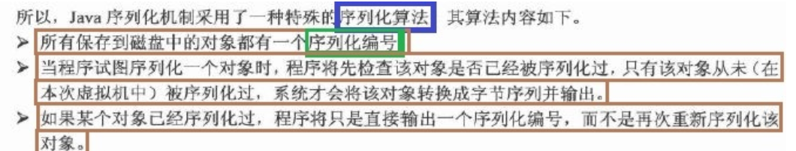

前言
为了面对面试官的穷追猛打，我先把别人面试遇到的问题先放在这
然后我们按不同的人遇到的，进行分类
来自牛客高启盛-pdd
描述一下服务注册到注册中心和服务下线的一个具体流程
答：
服务注册是使用bean扫描的方式进行自动注册，我自定义了两个注解，一个是服务提供者，一个是服务消费者的注册，通过**postProcessBeforeInitialization**方法，在方法内实现判断当前bean是否被@RpcService注解标记，如果有就将其注册到zk上。
通过**postProcessAfterInitialization**方法，在方法内判断当前bean是否被@RpcReference标记，如果有就构建代理对象并设置到对应的字段当中，实现让他能够以类似本地调用的行为去进行远程调用。
当服务器关闭时，我通过设置 的CustomShutdownHook关闭钩子，清除所有注册的服务以及关闭所有创建的线程池。
在服务器运行过程当中，使用监听器，监听zk节点的变化，并进行更新
如果zk中的服务节点退出了，服务还能访问吗，怎么做
可以，项目当中使用了一致性哈希负载均衡算法，当一个服务节点退出了之后，首先监听器会得到这个事件，然后去进行对应的更新
然后当服务节点退出了之后，在使用一致性哈希算法进行选择服务地址的时候，会发现当前选择器的哈希值和服务对应的哈希值不同，那么将会重新构建选择器，并且更新缓存，从而将原本节点的任务分配给他的下一个节点
为了解决一个节点无法承受很多请求量的雪崩问题，我们还设置了虚拟节点，将一个物理结点拆分成多个虚拟节点，解决资源不平衡问题
如果一个正在被客户端请求的服务提供方准备下线，有什么方法能保证客户端这次能正常通信？
答：
可以看这一篇文章，我这项目里没解决这个问题
RPC：优雅关闭，如何避免服务停机带来的业务损失_rpcbind服务关闭影响-CSDN博客
是不是可以在重启机器之前，先通过“某种方式”把要下线的机器从调用方维护的“健康列表”中删除就可以了，这样负载均衡机制就选不中这个节点的？
因为服务提供方已经开始进入了关闭流程，那么很多对象就可能已经销毁了，关闭后再收到的请求按照正常业务请求来处理，肯定是没法保证能处理的。所以，我们可以在关闭的时候，设置一个请求“挡板”，挡板的作用就是告诉调用方，我已经开始进入关闭流程了，不能再处理你的这个请求了。
一个生活中的例子就是银行在交接班或者有其他要事情处理的时候，银行柜台工作人员会拿出一个纸板，放在窗口前，上面写到“该窗口已关闭”。在该窗口排队的人虽然有一万个不愿意，也只能换到其它窗口办理业务，因为柜台工作人员会把当前正在办理的业务处理完后正式关闭窗口。
基于这个思路，我们可以这样处理：
- 当服务提供方正在关闭，如果这之后还收到了新的业务请求，服务提供方直接返回一个特定的异常给调用方（比如shutdownException）。
- 这个异常就是告诉调用方“我已经收到这个请求了，但是我正在关闭，并没有处理这个请求”
- 然后调用方收到这个异常响应后，RPC框架把这个节点从健康列表中拿出，并把请求自动重试到其他节点，因为这个请求是没有被服务提供方处理过，所以可以安全的重试到其他节点，这样就可以实现对业务无损。
但是如果只是靠等待被动，就会让这个关闭流程整体有点漫长。因为有的调用方那个时刻没有业务请求，就不能及时的通知调用方了，所以我们可以加上主动通知流程，这样既可以保证实时性，也可以避免通知失败的情况。
问题：要怎么捕获到关闭事件呢？
- 可以通过捕获操作系统的进程信号来获取
- 在RPC启动的时候，我们提前注册关闭钩子，并在里面添加两个处理程序，一个负责关闭标识，一个负责安全关闭服务对象:
- 服务对象在关闭的时候会通知调用方下线节点。
- 同时需要我们在调用链里面加上挡板处理器，当新的请求来的时候，会判断关闭表示，如果正在关闭，则抛出异常。
问题：关闭过程中已经在处理的请求会不会被影响呢？
- 如果进程结束过快会造成这些请求还没有来得及应答，同时调用方也会抛出异常。 为了尽可能的完成正在处理的请求，首先我们要把这些请求标识出来。
- 这就好比日常生活中，我们经常看见停车场指示牌上提示还有多少剩余车位，这个是如何做到的呢？如果仔细观察一下，你就会发现它是每进入一辆车，剩余车位就减一，每出来一辆车，剩余车位就加一。
- 我们也可以利用这个原理在服务对象加上引用计数器，每开始处理请求之前加一，完成请求处理减一，通过该计数器我们就可以快速判断是否有正在处理的请求。
- 服务对象在关闭过程中，会拒绝新的请求，同时根据引用计数器等待正在处理的请求全部结束之后才会真正关闭。
- 但考虑到有些业务请求可能会处理时间长，或者存在被挂住的情况，为了避免一直等待造成应用无法正常退出，我们可以在整个shutdownHook里面，加上超时时间控制，当超过了指定时间还没结束，就强制退出应用。超时时间建议10s，基本可以确保请求都处理完了。
来自牛客高启盛-字节一面
介绍一下 Netty、Socket、Http 三种通信方式的区别
答：
Socket是基于传输层的协议，Socket 编程提供了底层的灵活性，但需要程序员自己处理协议的细节。适用于需要直接操作网络层的场景，例如实现自定义的网络协议、P2P 网络通信等
Http是建立在tcp之上的应用层的协议，定义了客户端和服务端请求和响应的格式
而Netty是提供了异步事件驱动的开源网络框架，可以支持多种协议，包含http，适用于构建高性能的网络应用
如何用Socket去实现Netty的线程模型
netty线程模型爷还没看，等会看
自定义协议和编解码的具体做法
本项目使用了自定义传输协议;
* 0 1 2 3 4 5 6 7 8 9 10 11 12 13 14 15 16
* +-----+-----+-----+-----+--------+----+----+----+------+-----------+-------+----- --+-----+-----+-------+
* | magic code |version | full length | messageType| codec|compress| RequestId |
* +-----------------------+--------+---------------------+-----------+-----------+-----------+------------+
* | |
* | body |
* | |
* | ... ... |
* +-------------------------------------------------------------------------------------------------------+
* 4B magic code（魔法数） 1B version（版本） 4B full length（消息长度） 1B messageType（消息类型）
* 1B compress（压缩类型） 1B codec（序列化类型） 4B requestId（请求的Id）首先包含4个字节的魔数，用于筛选消息是否符合自定义协议
然后是1字节的版本号
然后是4字节的消息长度位，用来表示消息长度
然后是1字节的消息类型，表示是请求消息，响应消息还是心跳消息
然后是一字节的序列化类型，表示采用什么序列化协议
然后是一字节的压缩类型，表示使用了什么压缩算法
然后是4字节的请求id，用于判断请求和响应是否对应
最后是请求体，也就是内容
本项目采用了kryo进行序列化，我自定义了编码器和解码器，编码就是将消息先按照协议写入魔数等等，然后再将消息体的内容进行序列化，再压缩，最后存入bytebuf中
解码就是将消息从bytebuf中读取，先按照协议检查魔数等是否对应，如果对应则进行解压缩和反序列化
五种序列化算法的体积的比较
我也不知道面试官问的哪些，我就默认是这五种了：
JDK原生：作为一个成熟的编程语言，JDK自带了序列化方法。只需要类实现了
Serializable接口，就可以通过ObjectOutputStream类将对象变成byte[]字节数组。JDK 序列化会把对象类的描述信息和所有的属性以及继承的元数据都序列化为字节流，所以会导致生成的字节流相对比较大
ProtoBuf:谷歌推出的，是一种语言无关、平台无关、可扩展的序列化结构数据的方法，它可用于通信协议、数据存储等。序列化后体积小，一般用于对传输性能有较高要求的系统。
Hessian：是一个轻量级的二进制 web service 协议，主要用于传输二进制数据，相对于 JDK 原生序列化，Hessian序列化之后体积更小。但是比Protobuf大。
Kryo： 号称 Java 最快的序列化框架。Kryo 在序列化速度上很有优势，底层依赖于字节码生成机制。由于只能限定在 JVM 语言上，所以 Kryo 不支持跨语言使用。
JSON： JSON 序列化方式生成的是一串有规则的字符串，在可读性上要优于上面几种方式，但是在体积上就没什么优势了
从二进制流大小来讲：JSON 序列化 > Java 序列化 > Hessian2 序列化 > Kryo 序列化
为什么 Kryo 的体积小？（原理）
有一说一找遍全网没找到答案
Kryo使用二进制格式进行序列化，而不是类似于JSON或XML这样的文本格式。二进制格式通常更加紧凑。 Kryo在序列化的过程中不保存类型信息或字段名，而是使用索引或标签，这减少了序列化数据中的冗余信息。
Kryo为了提供性能和减小序列化结果体积，提供注册的序列化对象类的方式。
在注册时，会为该序列化类生成int ID，后续在序列化时使用int ID唯一标识该类型。
注册的方式如下：
或者可以明确指定注册类的int ID，但是该ID必须大于等于0。如果不提供，内部将会使用int++的方式维护一个有序的int ID生成。
hessian使用了固定长度存储int和long，而kryo则使用的变长，实际中，很大的数据不会经常出现
hessian将序列化的字段长度写入来确定一段field的结束，而kryo对于String将其最后一位byte+x70用于标识结束
使用这种方式进行序列化反序列化的问题是什么
就相当于是问kryo的缺点呗
不支持包含无参构造器类的反序列化 ，尝试反序列化一个不包含无参构造器的类将会得到以下的异常
Kryo 是线程不安全的，意味着每当需要序列化和反序列化时都需要实例化一次，或者借助 ThreadLocal 来维护以保证其线程安全。
缓存大小：Kryo 使用缓存来存储已经序列化或反序列化过的对象，默认情况下缓存大小为 4096。如果需要处理大量的对象，请适当增加缓存大小以提高性能。
几种序列化算法时间上的对比
从序列化耗时而言来讲：GSON 序列化 > Java 序列化 > Kryo 序列化 > Hessian2 序列化 > Kryo 序列化注册模式
从反序列化耗时而言来讲：GSON 序列化 > Java 序列化 > Hessian2 序列化 > Kryo 序列化注册模式 > Kryo 序列化
从总耗时而言：Kryo 序列化注册模式耗时最短
Netty通信的心跳机制如何实现的
在客户端channel的pipeline里添加IdleStateHandler，用于处理空闲状态，本项目设置的是如果5秒内没有写操作，也就是服务端没有向客户端发送内容，那么就触发写空闲事件
在触发写空闲事件后，在 userEventTriggered方法中，我们获取到的IdleStateEvent就会是WRITER_IDLE表示写空闲，那么客户端会发送心跳请求，维持和服务端的链接
同样的再服务端channel也添加这样的handler，但是关注的是读事件，如果30秒没有从客户端读取，那么就发送心跳请求，维持和客户端的链接
使用zk做服务注册和发现中心，具体实现流程
这个和pdd的问法一样啊
zk的一致性算法（ZAB原理
你以为他要问的是你选择的一致性哈希？不是，他问的是zab !是zookeeper自己选择的那个算法！
ZAB-一致性算法 | Echo Blog (houbb.github.io)
面试官zookeeper 是如何实现一致性的？我大意了，让我回去等通知_Java_InfoQ写作社区
有一说一有点复杂，后面在总结
面试的时候你要说：讲了ZAB是paxos的改版，Mysql是paxos、redis sentinel是raft、zookeeper是ZAB、ZAB的具体实现）
针对游戏客户端登录服务器的问题，每个客户端进行登录都要先去服务端申请id，当出现大量客户同时登录如何处理，当登录失败如何处理，如何提高id申请的可用性解决方案
我草这什么玩意，一个一个看吧
并发登录请求处理
- 使用分布式锁： 在申请ID的过程中，可以使用分布式锁来保证同一时间只有一个客户端能够成功申请ID。这可以防止多个客户端同时请求导致的问题。
- 限流： 可以限制每秒允许的登录请求次数，以减轻服务器的压力。可以使用令牌桶算法或漏桶算法来实现。
登录失败处理：
- 错误码返回： 在登录失败时，服务器可以返回特定的错误码，客户端根据错误码进行相应的处理，例如重新尝试登录或者展示错误提示。
- 日志记录： 记录登录失败的详细信息，便于后续排查问题。
提高ID申请的可用性：
- ID生成器优化： 使用高效的ID生成器，确保在高并发情况下仍能够迅速生成唯一ID。可以考虑使用Snowflake算法snowflake等。
- 缓存ID： 在一定时间内，可以将已经生成的ID缓存起来，避免频繁地生成新的ID。这在高并发登录场景下可以提高性能。
对RPC压力测试的具体实现过程
这个压力测试我还没做，他妈的
假设有3台服务器，性能比为1：2：3，设计一个负载均衡算法能合理进行负载均衡
我们可以使用加权轮询算法
我们按照性能给3个服务器分别设置权重为10,20,30总和权重为60，这样每个服务器就在0-60里占有一部分空间，然后我们取0-60的随机数，落入哪个区间就分配给哪个服务器，这样只要服务次数够多，就会无线接近权重分配.缺点是如果一个服务器权重过大，那么一段时间就会有大部分请求落入其中，造成不平衡。
在此基础上，平滑加权算法来了.
每个服务器不仅有不变的配置权重，还有当前权重，每次请求到达时，所有节点就在当前权重基础上加一个配置权重值那就是60，然后选择当前权重最大的节点，当处理完毕后，处理的那个节点权重值需要减去总“配置权重值”，在这里也就是60，然后重复这个过程,nginx就是这个算法
针对每个接口，业务执行的时间在某一个范围之内随机跳动，你如何去设计负载均衡算法
我超，不会
来自牛客高启盛-携程面试
客户端进行远程调用的时候是每一次都要去访问注册中心进行服务发现吗
并不是实际访问了注册中心，我设计了SERVICE_ADDRESS_MAP，缓存了每个服务对应的子节点列表，当客户端进行远程调用的时候，会先去这个缓存里寻找，通过一致性哈希算法选择一个节点。
获取结果是同步还是异步的
目前是异步的，我使用了CompletableFuture对象来包装RpcResponse,然后将他存入一个名为unprocessedRequests的map里，一开始future里并没有内容，等客户端调用complete方法后，才会在方法内执行future.complete，这才获得了具体的rpc返回响应
客户端是否知道什么时候结果已经返回了
当服务器处理完请求并返回响应时，响应中包含了相同的requestId。Netty RPC客户端的处理程序会从响应中取出requestId，然后根据requestId找到对应的CompletableFuture，将响应设置到CompletableFuture中
有一说一 还是没有回答这个问题
来自牛客高启盛-美团一面
Netty的线程模型，主从线程模型
Netty 多线程模型 (klose911.github.io)
客户端线程模型如下：
- 由用户线程负责初始化客户端资源，发起连接操作
- 如果连接成功，将SocketChannel注册到IO线程组的NioEventLoop线程中，监听读操作位
- 如果没有立即连接成功，将SocketChannel注册到IO线程组的NioEventLoop线程中，监听连接操作位
- 连接成功之后，修改监听位为READ，但是不需要切换线程
然后看这个文章总结吧，要面试的时候说呢，就这么说：
主从多线程模型：Acceptor 线程用于绑定监听端口，接收客户端连接，将SocketChannel 从主线程池的 Reactor 线程的多路复用器上移除，重新注册到Sub 线程池的线程上，用于处理I/O 的读写等操作，从而保证 mainReactor 只负责接入认证、握手等操作；
了解Netty当中的时间轮吗
上面那个文章也提到了
[21 技巧篇：延迟任务处理神器之时间轮 HashedWheelTimer (lianglianglee.com)](https://learn.lianglianglee.com/专栏/Netty 核心原理剖析与 RPC 实践-完/21 技巧篇：延迟任务处理神器之时间轮 HashedWheelTimer.md)
这个也可以看看
HashedWheelTimer 的构造函数清晰地列举出了几个核心属性：
- threadFactory，线程池，但是只创建了一个线程；
- tickDuration，时针每次 tick 的时间，相当于时针间隔多久走到下一个 slot；
- unit，表示 tickDuration 的时间单位；
- ticksPerWheel，时间轮上一共有多少个 slot，默认 512 个。分配的 slot 越多，占用的内存空间就越大；
- leakDetection，是否开启内存泄漏检测；
- maxPendingTimeouts，最大允许等待任务数。
时间轮的创建就是为了创建 HashedWheelBucket 数组，每个 HashedWheelBucket 表示时间轮中一个 slot。从 HashedWheelBucket 的结构定义可以看出，HashedWheelBucket 内部是一个双向链表结构，双向链表的每个节点持有一个 HashedWheelTimeout 对象，HashedWheelTimeout 代表一个定时任务。每个 HashedWheelBucket 都包含双向链表 head 和 tail 两个 HashedWheelTimeout 节点，这样就可以实现不同方向进行链表遍历。
添加任务
newTimeout() 方法主要做了三件事，分别为启动工作线程，创建定时任务，并把任务添加到 Mpsc Queue。HashedWheelTimer 的工作线程采用了懒启动的方式，不需要用户显示调用。这样做的好处是在时间轮中没有任务时，可以避免工作线程空转而造成性能损耗
工作线程的启动之前，会通过 CAS 操作获取工作线程的状态，如果已经启动，则直接跳过。如果没有启动，再次通过 CAS 操作更改工作线程状态，然后启动工作线程。启动的过程是直接调用的 Thread#start() 方法
回到 newTimeout() 的主流程，接下来的逻辑就非常简单了。根据用户传入的任务延迟时间，可以计算出任务的 deadline，然后创建定时任务 HashedWheelTimeout 对象，最终把 HashedWheelTimeout 添加到 Mpsc Queue 中。看到这里，你会不会有个疑问，为什么不是将 HashedWheelTimeout 直接添加到时间轮中呢？而是先添加到 Mpsc Queue？Mpsc Queue 可以理解为多生产者单消费者的线程安全队列，下节课我们会对 Mpsc Queue 详细分析，在这里就不做展开了。可以猜到 HashedWheelTimer 是想借助 Mpsc Queue 保证多线程向时间轮添加任务的线程安全性。****
工作线程 Worker
工作线程 Worker 的核心执行流程是代码中的 do-while 循环，只要 Worker 处于 STARTED 状态，就会执行 do-while 循环，我们把该过程拆分成为以下几个步骤，逐一分析。
- 通过 waitForNextTick() 方法计算出时针到下一次 tick 的时间间隔，然后 sleep 到下一次 tick。
- 通过位运算获取当前 tick 在 HashedWheelBucket 数组中对应的下标
- 移除被取消的任务。
- 从 Mpsc Queue 中取出任务加入对应的 HashedWheelBucket 中。
- 执行当前 HashedWheelBucket 中的到期任务。
懒得写了 ，看文章吧
牛客高启盛-美团二面
知道哪些比较成熟的RPC框架
DUBBO,GRPC….
你的RPC和Dubbo对比有哪些区别（优缺点）
- 服务治理： Dubbo提供了完整的服务治理功能，包括负载均衡、容错机制、服务注册与发现等。这使得在大型分布式系统中更容易管理和维护服务。
- 丰富的特性： Dubbo提供了更丰富的特性，例如可插拔的协议、注册中心、集群等。这使得Dubbo适用于更复杂的应用场景。
- 生态系统： Dubbo在阿里巴巴内部积累了大量的应用场景，具有较为丰富的生态系统。
粘包拆包怎么解决
就是自己设计了传输协议么
说一说Netty的原理
还没想好怎么回答这个逆天问题
三种线程模型如何选型？主从多线程模型一定更快吗
单Reacotor单线程模型用的很少，基本没啥用，因为不能充分利用多核资源，当处理读写任务线程(单线程)负载过高后，处理速度下降，事件会堆积，严重的会超时，可能导致客户端重新发送请求，性能越来越差。再加上可靠性问题，一旦Reactor线程意外中断会导致整个通信模块不可用，无法接收和处理外部消息，造成节点故障。
单Reactor多线程模型，区别在于处理器部分使用了多线程，可以满足绝大多数的场景，除了一些个别的特殊场景：比如一个NIO线程负责处理客户所有的连接请求，但是如果连接请求中包含认证的需求（安全认证），在百万级别的场景下，就存在性能问题了，因为认证本身就要消耗CPU。
主从多线程模型：接入认证、IP黑白名单过滤、握手等操作的时候，需要主从多线程模型
不一定更快，因为认证、过滤等操作本身也需要消耗cpu
并发量小就不能用多线程模式吗
两个节点有海量数据传输用哪种线程结构？（把他拆成多线程去传输还是什么，怎么选型？）
声哥总结的
为什么用 RPC，不用 HTTP
RPC 是一种设计，就是为了解决不同服务之间的调用问题，完整的 RPC 实现一般会包含有 传输协议 和 序列化协议 这两个。
而 HTTP 是一种传输协议，RPC 框架完全可以使用 HTTP 作为传输协议，也可以直接使用 TCP，使用不同的协议一般也是为了适应不同的场景。
使用 TCP 和使用 HTTP 各有优势：
传输效率：
- TCP，通常自定义上层协议，可以让请求报文体积更小
- HTTP：如果是基于HTTP 1.1 的协议，请求中会包含很多无用的内容
性能消耗，主要在于序列化和反序列化的耗时
- TCP，可以基于各种序列化框架进行，效率比较高
- HTTP，大部分是通过 json 来实现的，字节大小和序列化耗时都要更消耗性能
跨平台：
- TCP：通常要求客户端和服务器为统一平台
- HTTP：可以在各种异构系统上运行
总结：
RPC 的 TCP 方式主要用于公司内部的服务调用，性能消耗低，传输效率高。HTTP主要用于对外的异构环境，浏览器接口调用，APP接口调用，第三方接口调用等。
调用如何在客户端无感（动态代理）
项目中使用了JDK动态代理，具体流程被包含在了通过注解自动注册服务的过程当中，对每一个bean检查他是否有@RpcReference注解，如果有说明他是一个消费服务，需要调用远程方法，那么就通过RpcClientProxy创建了一个代理对象 clientProxy，通过反射将clientProxy映射到原来的字段值上，然后会在方法调用时委托给invoke方法，invoke方法负责执行远程调用，而对于客户端来讲，和调用本地方法的外观是一样的。
动态代理和静态代理的区别
静态代理的代理对象和被代理对象在代理之前就已经确定，它们都实现相同的接口或继承相同的抽象类。静态代理中，我们对目标对象的每个方法的增强都是手动完成的
从 JVM 角度来说，动态代理是在运行时动态生成类字节码，并加载到 JVM 中的。
JDK 动态代理是利用反射机制生成一个实现代理接口的匿名类，在调用业务方法前调用InvocationHandler 处理。代理类必须实现 InvocationHandler 接口，并且，JDK 动态代理只能代理实现了接口的类
如果想代理没有实现接口的对象
CGLIB(Code Generation Library)是一个基于ASM的字节码生成库，它允许我们在运行时对字节码进行修改和动态生成。CGLIB 通过继承方式实现代理。很多知名的开源框架都使用到了CGLIB， 例如 Spring 中的 AOP 模块中：如果目标对象实现了接口，则默认采用 JDK 动态代理，否则采用 CGLIB 动态代理。
对象是怎么在网络中传输的
通过将对象序列化成字节数组，即可将对象发送到网络中。
在 Java 中，想要序列化一个对象，这个对象所属的类必须实现了 Serializable 接口，并且其内部属性必须都是可序列化的。如果有一个属性不是可序列化的，则该属性必须被声明为 transient。
JDK 中提供了 ObjectOutStream 类来对对象进行序列化。
本项目使用了kryo做序列化
你的框架实现了哪几种序列化方式
本项目实现的基于kryo的序列化
Kryo 是一个快速高效的 Java 序列化框架，旨在提供快速、高效和易用的 API。无论文件、数据库或网络数据 Kryo 都可以随时完成序列化。 Kryo 还可以执行自动深拷贝、浅拷贝。这是对象到对象的直接拷贝，而不是对象->字节->对象的拷贝。kryo 速度较快，序列化后体积较小，但是跨语言支持较复杂
简单介绍一下 Netty
Netty 是一个异步事件驱动的网络应用程序框架，用于快速开发可维护的高性能协议服务器和客户端。Netty 基于 NIO 的，封装了 JDK 的 NIO，让我们使用起来更加方法灵活。
特点和优势：
- 使用简单：封装了 NIO 的很多细节，使用更简单。
- 功能强大：预置了多种编解码功能，支持多种主流协议。
- 定制能力强：可以通过 ChannelHandler 对通信框架进行灵活地扩展。
- 性能高：通过与其他业界主流的 NIO 框架对比，Netty 的综合性能最优。
为什么 Netty 性能高
- IO 线程模型：同步非阻塞，用最少的资源做更多的事。
- 内存零拷贝：尽量减少不必要的内存拷贝，实现了更高效率的传输。
- 内存池设计：申请的内存可以重用，主要指直接内存。内部实现是用一颗二叉查找树管理内存分配情况。
- 串行化处理读写：避免使用锁带来的性能开销。
- 高性能序列化协议：支持 protobuf 等高性能序列化协议。
简单说下 BIO、NIO 和 AIO
BIO（同步阻塞）：客户端在请求数据的过程中，保持一个连接，不能做其他事情，线程开销大
NIO：一个请求一个线程，但客户端发送的连接请求都会注册到多路复用器上，多路复用器轮询到连接有I/O请求时才启动一个线程进行处理。
AIO：一个有效请求一个线程，客户端的I/O请求都是由OS先完成了再通知服务器应用去启动线程进行处理。
如何解决 TCP 的粘包拆包问题
我的项目里是使用了自定义的传输协议解决这个问题，然后xxxxx前面有回答过了
但是Netty也有自己提供了一些解决方式
Netty 自带解决方式：
- 消息定长：FixedLengthFrameDecoder 类
- 包尾增加特殊字符分割：
- 行分隔符类：LineBasedFrameDecoder
- 自定义分隔符类 ：DelimiterBasedFrameDecoder
- 将消息分为消息头和消息体：LengthFieldBasedFrameDecoder 类。分为有头部的拆包与粘包、长度字段在前且有头部的拆包与粘包、多扩展头部的拆包与粘包。
说下 Netty 零拷贝
[16 IO 加速：与众不同的 Netty 零拷贝技术 (lianglianglee.com)](https://learn.lianglianglee.com/专栏/Netty 核心原理剖析与 RPC 实践-完/16 IO 加速：与众不同的 Netty 零拷贝技术.md)
有一说一这个博客无敌啊感觉，全是好文章
堆外内存：Netty 的接收和发送 ByteBuffer 采用 DIRECT BUFFERS，使用堆外直接内存进行 Socket 读写，不需要进行字节缓冲区的二次拷贝。如果使用传统的堆内存（HEAP BUFFERS）进行 Socket 读写，JVM 会将堆内存 Buffer 拷贝一份到直接内存中，然后才写入 Socket 中。相比于堆外直接内存，消息在发送过程中多了一次缓冲区的内存拷贝。
CompositeByteBuf：在 CompositeByteBuf 内部保存着每个 ByteBuf 的引用关系，从逻辑上构成一个整体。CompositeByteBuf 内部维护了一个 Components 数组。在每个 Component 中存放着不同的 ByteBuf，各个 ByteBuf 独立维护自己的读写索引，而 CompositeByteBuf 自身也会单独维护一个读写索引。这样避免了传统通过内存拷贝的方式将几个小 Buffer 合并成一个大的 Buffer。
ByteBuf.slice 操作：ByteBuf.slice 是将一个 ByteBuf 对象切分成多个共享同一个底层存储的 ByteBuf 对象。由于底层存储是共享的，所以也避免了新建bytebuf对象所需要的拷贝操作
文件传输 FileRegion：Netty 使用 FileRegion 实现文件传输的零拷贝，FileRegion 其实就是对 FileChannel 的包装，并没有什么特殊操作，底层使用的是 JDK NIO 中的 FileChannel#transferTo() 方法实现文件传输，所以 FileRegion 是操作系统级别的零拷贝。
简单说下 Netty 中的重要组件
Channel：Netty 网络操作抽象类，它包括基本的 I/O 操作，如 bind、connect、read、write 等。
EventLoop：主要是配合 Channel 处理 I/O 操作，用来处理连接的生命周期中所发生的事情。
ChannelFuture：Netty 框架中所有的 I/O 操作都为异步的，因此我们需要 ChannelFuture 的 addListener()注册一个 ChannelFutureListener 监听事件，当操作执行成功或者失败时，监听就会自动触发返回结果。
ChannelHandler：充当了所有处理入站和出站数据的逻辑容器。ChannelHandler 主要用来处理各种事件，这里的事件很广泛，比如可以是连接、数据接收、异常、数据转换等。
ChannelPipeline：为 ChannelHandler 链提供了容器，当 channel 创建时，就会被自动分配到它专属的 ChannelPipeline，这个关联是永久性的。
Netty 中责任链模式
责任链模式为请求创建了一个处理对象的链，发起请求和具体处理请求的过程进行解耦:职责链上的处理者负责处理请求,客户只需要将请求发送到职责链上,无需关心请求的处理细节和请求的传递.
netty 的 pipeline 设计,就采用了责任链设计模式, 底层采用双向链表的数据结构, 将链上的各个处理器(handler)串联起来
客户端每一个请求的到来，netty 都认为，pipeline 中的所有的处理器都有机会处理它，因此，对于入栈的请求，全部从头节点开始往后传播，一直传播到尾节点（来到尾节点的 msg 会被释放掉）。
责任终止机制
- 在pipeline中的任意一个节点，只要我们不手动的往下传播下去，这个事件就会终止传播在当前节点
- 对于入站数据，默认会传递到尾节点，进行回收，如果我们不进行下一步传播，事件就会终止在当前节点
Netty 是如何保持长连接的（心跳）
首先 TCP 协议的实现中也提供了 keepalive 报文用来探测对端是否可用。TCP 层将在定时时间到后发送相应的 KeepAlive 探针以确定连接可用性。
ChannelOption.SO_KEEPALIVE, true 表示打开 TCP 的 keepAlive 设置。
虽然在 TCP 协议层面上, 提供了 keepalive 保活机制, 但是使用它有几个缺点:
- 它不是 TCP 的标准协议, 并且是默认关闭的.
- TCP keepalive 机制依赖于操作系统的实现, 默认的 keepalive 心跳时间是 两个小时, 并且对 keepalive 的修改需要系统调用(或者修改系统配置), 灵活性不够.
- TCP keepalive 与 TCP 协议绑定, 因此如果需要更换为 UDP 协议时, keepalive 机制就失效了.
Netty 中提供了 IdleStateHandler 类专门用于处理心跳。
public IdleStateHandler(long readerIdleTime, long writerIdleTime,
long allIdleTime,TimeUnit unit){
}第一个参数是隔多久检查一下读事件是否发生，如果 channelRead() 方法超过 readerIdleTime 时间未被调用则会触发超时事件调用 userEventTrigger() 方法；
第二个参数是隔多久检查一下写事件是否发生，writerIdleTime 写空闲超时时间设定，如果 write() 方法超过 writerIdleTime 时间未被调用则会触发超时事件调用 userEventTrigger() 方法；
第三个参数是全能型参数，隔多久检查读写事件；
第四个参数表示当前的时间单位。
所以这里可以分别控制读，写，读写超时的时间，单位为秒，如果是0表示不检测，所以如果全是0，则相当于没添加这个 IdleStateHandler，连接是个普通的短连接。
牛客-雨鱼羽-zk部分
为什么用Zookeeper做注册中心？
就是各种类似的问题，比如什么zk的好处啊，优点啊什么的
Zookeeper的数据模型很简单，有一系列被称为ZNode的数据节点组成，与传统的磁盘文件系统不同的是，zk将全量数据存储在内存中，可谓是高性能，而且支持集群，可谓高可用，另外支持事件监听。这些特点决定了zk特别适合作为注册中心(数据发布/订阅)。
为什么不用redis？：zookeeper临时节点自动宕机自动清除
和nacos的区别：Zookeeper采用CP保证数据的一致性的问题，原理采用(ZAP原子广播协议)，当我们ZK领导者因为某种情况下部分节点出现了故障，会自动重新实现选举新的领导角色，整个选举的过程中为了保证数据一致性的问题，客户端暂时无法使用我们的Zookeeper，那么这以为着整个微服务无法实现通讯。而Nacos从1.0版本选择Ap和CP混合形式实现注册中心，默认情况下采用Ap，CP则采用Raft协议实现保持数据的一致性。
如果选择为Ap模式，注册服务的实例仅支持临时模式，在网络分区的的情况允许注册服务实例
选择CP模式可以支持注册服务的实例为持久模式，在网络分区的产生了抖动情况下不允许注册服务实例。
Zookeeper和Eureka分别是满足CAP中的哪些
CAP：一致性（Consistency）、可用性（Availability）、分区容忍性（Partition tolerance）。CAP 原则指的是，这三个要素最多只能同时实现两点，不可能三者兼顾。
Zookeeper采用CP保证数据的一致性的问题，原理采用(ZAP原子广播协议)，当我们ZK领导者因为某种情况下部分节点出现了故障，会自动重新实现选举新的领导角色，整个选举的过程中为了保证数据一致性的问题，客户端暂时无法使用我们的Zookeeper，那么这以为着整个微服务无法实现通讯。
Eureka采用AP设计思想实现分布式注册中心，完全去中心化、每个节点都是相等，采用你中有我、我中有你相互注册设计思想， 只要最后有一台Eureka节点存在整个微服务就可以实现通讯。在eureka集群中，如果某个节点发生宕机，eureka不会有类似zookeeper选举的行为,即不会对外停止服务。客户端请求会切换到别的eureka节点，当宕机的服务器重新恢复后会被再次加入集群管理中同步别的eureka server保存的注册信息。
如果让你设计一个服务注册中心，怎么设计
这个注册中心需要有如下功能：
服务注册接口：服务提供者通过调用服务注册接口来完成服务注册。
服务注销接口：服务提供者通过调用服务反注册接口来完成服务注销。
心跳汇报接口：服务提供者通过调用心跳汇报接口完成节点存活状态上报。
服务订阅接口：服务消费者通过调用服务订阅接口完成服务订阅，获取可用的服务提供者节点列表。
服务变更查询接口：服务消费者通过调用服务变更查询接口，获取最新的可用服务节点列表。
服务查询接口：查询注册中心当前注册了哪些服务信息。
服务修改接口：修改注册中心中某一服务的信息。
集群一般有几个节点，为什么
5个，宕机后选举要大于一半成为leader。
socket过程中发生的系统调用
服务器：
socket();//socket要求必须绑定socket；
bind();//绑定端口和IP，这样我们才知道是那台主机；
listen();//监听，看有没有请求连接
accept();//接收请求
send()||rev();//接收和发送消息
客户端：
socket();//socket要求必须绑定socket；
connect();//请求连接
zookeeper服务容灾？
容灾：在集群若干台故障后，整个集群仍然可以对外提供可用的服务。
解决多数据中心容灾的方案有单机房增加节点、同城多机房、两地三中心(异地容灾)等

1）单机房多节点
对于单机房增加节点将其部署在不同的机柜中可以一定程度提高高可用性，避免多个节点同时出现问题

节点选举及事务性请求都需要半数以上成功则算是成功，因此多增加节点对写请求及选举过程的影响都比较大，并且这种方案不能解决整个机房出现故障的容灾问题。
2）同城多机房
单机房做不到容灾，在同城进行多机房的部署，如下图所示：

多机房部署要考虑某机房故障情况下，保证有半数以上的 Zookeeper 节点正常工作，如果仅两个机房的情况下无法保证，上例中三机房部署是可以实现任意一个机房故障情况下，满足正常节点上大于半数以上，保证机房容灾。
zookeeper服务节点挂掉之后，怎么删除它
删除：使用临时节点，会话失效，节点自动清除。
Zookeeper有几种角色
群首（leader），追随者（follower），观察者（observer），这个在ZAP算法里，好好看看
CAP理论解释下？P是什么？
一致性（Consistency）多个副本之间的数据一致性
可用性（Availability）在合理规定的时间内，是否能返回一个明确的结果。
分区容错性（Partition tolerance）在分区故障下，仍然可以对外提供正常的服务。
一个分布式系统在以上三个特性中：最多满足其中的两个特性
Zookeeper集群节点宕机了怎么发现剔除的
通过watcher机制
zookeeper引入了watcher机制来实现发布/订阅功能，能够让多个订阅者同时监听某一个主题对象，当这个主题对象自身状态发生变化时，会通知所有订阅者。当一个集群宕机，其他的集群会通过这个机制得到宕机的消息。
剔除：不知道，貌似是临时节点自动剔除？
服务熔断和服务降级有什么区别
服务熔断：如果某个目标服务调用慢或者有大量超时，此时，熔断该服务的调用，对于后续调用请求，不在继续调用目标服务，直接返回，快速释放资源。如果目标服务情况好转则恢复调用。
服务降级：当服务器压力剧增的情况下，根据当前业务情况及流量对一些服务和页面有策略的降级，以此释放服务器资源以保证核心任务的正常运行。
延迟持久化：页面访问照常，但是涉及记录变更，会提示稍晚能看到结果，将数据记录到异步队列或log，服务恢复后执行。
随机拒绝服务：服务接口随机拒绝服务，让用户重试，目前较少有人采用。因为用户体验不佳。
服务接口拒绝服务：页面能访问，但是添加删除操作提示服务器繁忙。页面内容也可在Varnish或CDN内获取。
页面拒绝服务：页面提示由于服务繁忙此服务暂停。跳转到varnish或nginx的一个静态页面。
zk羊群效应？怎么解决（Zookeeper的分布式锁实现方式
Zookeeper分布式锁场景中的羊群效应指的是所有的客户端都尝试对一个临时节点去加锁，当一个锁被占有的时候，其他的客户端都会监听这个临时节点。一旦锁被释放，Zookeeper反向通知添加监听的客户端，然后大量的客户端都尝试去对同一个临时节点创建锁，最后也只有一个客户端能获得锁，但是大量的请求造成了很大的网络开销，加重了网络的负载，影响Zookeeper的性能。
解决：
首先得了解什么是临时顺序节点：
- 第一，节点的生命周期和client回话绑定，即创建节点的客户端回话一旦失效，那么这个节点就会被删除。（临时性）
- 第二，每个父节点都会维护子节点创建的先后顺序，自动为子节点分配一个整形数值，以后缀的形式自动追加到节点名称中，作为这个节点最终的节点名称。（顺序性）
所以实现分布式锁的一般思路是什么：
- client调用create()方法创建“/zk-locks”节点，注意节点类型是EPHEMERAL_SEQUENTIAL
- client调用getChildren(“/zk-locks”,watch)来获取所有已经创建的子节点，并同时在这个节点上注册子节点变更通知的Watcher
- 客户端获取到所有子节点Path后，如果发现自己在步骤1中创建的节点是所有节点中最小的，那么就认为这个客户端获得了锁
- 如果在步骤3中，发现不是最小的，那么等待，直到下次子节点变更通知的时候，在进行子节点的获取，判断是否获取到锁
- 释放锁也比较容易，就是删除自己创建的那个节点即可
而这种思路因为每个子节点都被注册了watcher，会导致羊群效应
那么如何解决呢？
其实客户端的核心诉求在于判断自己是否是最小的节点，所以说每个节点的创建者其实不用关心所有的节点变更，它真正关心的应该是比自己序号小的那个节点是否存在
所以修改步骤：
- client调用create()方法创建“/zk-locks”节点，注意节点类型是EPHEMERAL_SEQUENTIAL
- client调用getChildren(“/zk-locks”,false)来获取所有已经创建的子节点，这里并不注册任何Watcher
- 客户端获取到所有子节点Path后，如果发现自己在步骤1中创建的节点是所有节点中最小的，那么就认为这个客户端获得了锁
- 如果在步骤3中，发现不是最小的，那么找到比自己小的那个节点，然后对其调用exist()方法注册事件监听
- 之后一旦这个被关注的节点移除，客户端会收到相应的通知，这个时候客户端需要再次调用getChildren(“/zk-locks”,false)来确保自己是最小的节点，然后进入步骤3
zk的分布式算法zab，如果选举的时候zxid都相同呢
这个还是在zab里，后面单独总结
Zookeeper 是如何保证一致性的
这个问题也是在问zab协议
ZooKeeper的作用
项目答：注册中心。
扩展答：
数据发布：数据发布/订阅（Publish/Subscribe）系统，即所谓的配置中心，顾明思义就是发布者将数据发布到zookeeper的一个或一系列的节点上，供订阅者进行数据订阅，进而达到动态获取数据的目的，实现配置信息的集中式管理和数据的动态更新。
命名服务：zookeeper的命名服务功能主要是根据指定名字来获取资源或服务的地址，提供者等信息，利用其znode的特点和watcher机制，将其作为动态注册和获取服务信息的配置中心，统一管理服务名称和其对应的服务器列表信息，我们能够近乎实时地感知到后端服务器的状态(上线、下线、宕机)。
全局唯一ID生成器：我们可以利用 ZooKeeper 数据模型中的顺序节点作为 ID 编码。客户端通过调用 create 函数创建顺序节点。服务器成功创建节点后，会响应客户端请求，把创建好的节点信息发送给客户端。客户端用数据节点名称作为 ID 编码，进行之后的本地业务操作。
master选举：主从模式，正常情况下主机提供服务，备机负责监听主机状态，当主机异常时，可以自动切换到备机继续提供服务，这个切换过程中选出下一个主机的过程就是master选举。传统的方法会导致双master情况，而zk利用节点创建的全局唯一性和临时节点的特性，在服务器启动的时候，去zookeeper特定的一个目录下注册一个临时节点(这个节点作为master，谁注册了这个节点谁就是master)，注册的时候，如果发现该节点已经存在，则说明已经有别的服务器注册了(也就是有别的服务器已经抢主成功)，那么当前服务器只能放弃抢主，作为从机存在。同时，抢主失败的当前服务器需要订阅该临时节点的删除事件，以便该节点删除时(也就是注册该节点的服务器宕机了或者网络断了之类的)进行再次抢主操作。从机具体需要去哪里注册服务器列表的临时节点，节点保存什么信息，根据具体的业务不同自行约定。选主的过程，其实就是简单的争抢在zookeeper注册临时节点的操作，谁注册了约定的临时节点，谁就是master。
分布式队列：创建/queue作为一个队列，然后每创建一个顺序节点，视为一条消息(节点存储的数据即为消息内容)，生产者每次创建一个新节点，做为消息发送，消费者监听queue的子节点变化（或定时轮询)，每次取最小节点当做消费消息，处理完后，删除该节点。相当于实现了一个FIFO(先进先出)的队列。
服务下线还有没有别的实现方法
沃特玛怎么知道
如果注册中心服务器宕机怎么保证高可用
主要考虑***容灾和扩容***两方面提高高可用。容灾刚刚说过了
分布式数据一致性协议都知道哪些
2PC 3PC Paxos
zookeeper的节点类型?
持久，临时，顺序
了解过zookeeper的问题吗
- zookeeper master就只能照顾一个机房，其他机房运行的业务模块由于没有master都只能停掉，对网络抖动非常敏感。
- 选举过程速度很慢且zk选举期间无法对外提供服务。
- zk的性能有限:典型的zookeeper的tps大概是一万多，无法覆盖系统内部每天动辄几十亿次的调用。因此每次请求都去zookeeper获取业务系统master信息是不可能的。因此zookeeper的client必须自己缓存业务系统的master地址。
牛客-雨鱼羽-序列化协议部分
各个序列化算法的特性？
json：
JSON 进行序列化的额外空间开销比较大，对于大数据量服务这意味着需要巨大的内存和磁盘开销；
JSON 没有类型，但像 Java 这种强类型语言，需要通过反射统一解决，所以性能不会太好（比如反序列化时先反序列化为String类，要自己通过反射还原）。
Kryo：这个前面也有总结过
使用变长的int和long保证这种基本数据类型序列化后尽量小
需要传入完整类名或者利用 register() 提前将类注册到Kryo上，其类与一个int型的ID相关联，序列中只存放这个ID，因此序列体积就更小
不是线程安全的，要通过ThreadLocal或者创建Kryo线程池来保证线程安全
不需要实现Serializable接口
字段增、减，序列化和反序列化时无法兼容
必须拥有无参构造函数
Hessian：
- 使用固定长度存储int和long
- 将所有类字段信息都放入序列化字节数组中，直接利用字节数组进行反序列化，不需要其他参与，因为存的东西多处理速度就会慢点。
- 把复杂对象的所有属性存储在一个Map中进行序列化。所以在父类、子类存在同名成员变量的情况下，Hessian序列化时，先序列化子类，然后序列化父类，因此反序列化结果会导致子类同名成员变量被父类的值覆盖
- 需要实现Serializable接口
- 兼容字段增、减，序列化和反序列化
- 必须拥有无参构造函数
- Java 里面一些常见对象的类型不支持，比如：
- Linked 系列，LinkedHashMap、LinkedHashSet 等；
- Locale 类，可以通过扩展 ContextSerializerFactory 类修复；
- Byte/Short 反序列化的时候变成 Integer。
Protobuf：
- 序列化后体积相比 JSON、Hessian 小很多
- 序列化反序列化速度很快，不需要通过反射获取类型；
- 打包生成二进制流
- 预编译过程不是必须的
序列化和反序列化有什么作用
（1）实现了数据的持久化：永久性保存对象，保存对象的字节序列到本地文件或者数据库中；
（2）序列化实现远程通：通过序列化以字节流的形式使对象在网络中进行传递和接收；
（3）通过序列化在进程间传递对象；
Serializable和Externalizable懂吗
1、Serializable序列化时不会调用默认的构造器，而Externalizable序列化时会调用默认构造器的！
2、Serializable：一个对象想要被序列化，它的类就要实现此接口，这个对象的所有属性都可以被序列化和反序列化来保存、传递。
Externalizable：自定义序列化可以控制序列化的过程和决定哪些属性不被序列化。
3、使用Externalizable时，必须按照写入时的确切顺序读取所有字段状态。否则会产生异常。
serializable关键字的作用（实现原理）
Serializable 用来标识当前类可以被 ObjectOutputStream 序列化，以及被 ObjectInputStream 反序列化。
因为 Java IO 是一种装饰者模式，因此可以通过 ObjectOutStream 包装 FileOutStream 将数据写入到文件中或者包装 ByteArrayOutStream 将数据写入到内存中。同理，可以通过 ObjectInputStream 将数据从磁盘 FileInputStream 或者内存 ByteArrayInputStream 读取出来然后转化为指定的对象即可。
静态成员变量是不能被序列化,序列化是针对对象属性的，而静态成员变量是属于类的。
然后序列化步骤就是：
- 将对象实例相关的类元数据输出。
- 递归地输出类的超类描述直到不再有超类。
- 类元数据完了以后，开始从最顶层的超类开始输出对象实例的实际数据值。
- 从上至下递归输出实例的数据
序列化传输
- 进程之间要通过网络传输结构化的数据，需要通过序列化和反序列化来实现结构化数据和二进制数据的双向转换。在选择序列化实现的时候，需要综合考虑数据可读性，实现复杂度，性能和信息密度这四个因素。
- 大多数情况下，选择一个高性能的通用序列化框架都可以满足要求，在性能可以满足需求的前提下，推荐优先选择 JSON 这种可读性好的序列化方法。
- 如果说我们需要超高的性能，或者是带宽有限的情况下，可以使用专用的序列化方法，来提升序列化性能，节省传输流量。不过实现起来很复杂，大部分情况下并不划算。
为什么不能直接把内存中对象对应的二进制数据直接通过网络发送出去。为什么还需要序列化和反序列化呢
内存里存的东西，不通用， 不同系统， 不同语言的组织可能都是不一样的， 而且还存在很多引用， 指针，并不是直接数据块。
序列化， 反序列化， 其实是约定一种标准吧， 大家都按这个标准去弄， 就能跨平台 ， 跨语言。
虽然都是二进制的数据，但是序列化的二进制数据是通过一定的协议将数据字段进行拼接。第一个优势是：不同的语言都可以遵循这种协议进行解析，实现了跨语言。第二个优势是：这种数据可以直接持久化到磁盘，从磁盘读取后也可以通过这个协议解析出来。
RPC 不同序列化协议了解吗？优缺点是？各种序列号协议的特点？序列化方式有哪几个，区别是什么，自己写过吗
为什么选KRYO序列化？（面试官提示了压缩)，java 的压缩算法
使用变长的int和long保证这种基本数据类型序列化后尽量小
需要传入完整类名或者利用 register() 提前将类注册到Kryo上，其类与一个int型的ID相关联，序列中只存放这个ID，因此序列体积就更小
不是线程安全的，要通过ThreadLocal或者创建Kryo线程池来保证线程安全
不需要实现Serializable接口
字段增、减，序列化和反序列化时无法兼容
必须拥有无参构造函数
Kryo原理
Kryo 通过使用类似于 Java 自带的 ObjectOutputStream 和 ObjectInputStream 的方式来进行对象的序列化和反序列化。但是，Kryo 采用了一些优化策略来提高性能和减小序列化结果的尺寸。
Kryo 的核心实现包括以下几个方面：
- 注册机制：Kryo 可以预先注册需要序列化的类，以避免在序列化过程中写入完整的类名。这样可以减少序列化结果的尺寸。
- 缓存机制：Kryo 使用缓存来存储已经序列化或反序列化过的对象，以便复用对象的状态和减少内存分配开销。
- 压缩算法：Kryo 支持对序列化结果进行压缩，以进一步减小网络传输的负载。
你说到你自定义了一个简单协议，自定义的协议头里包括哪些内容，多少字节，各自的作用是什么
* 0 1 2 3 4 5 6 7 8 9 10 11 12 13 14 15 16
* +-----+-----+-----+-----+--------+----+----+----+------+-----------+-------+----- --+-----+-----+-------+
* | magic code |version | full length | messageType| codec|compress| RequestId |
* +-----------------------+--------+---------------------+-----------+-----------+-----------+------------+
* | |
* | body |
* | |
* | ... ... |
* +-------------------------------------------------------------------------------------------------------+
* 4B magic code（魔法数） 1B version（版本） 4B full length（消息长度） 1B messageType（消息类型）
* 1B compress（压缩类型） 1B codec（序列化类型） 4B requestId（请求的Id）首先包含4个字节的魔数，用于筛选消息是否符合自定义协议
然后是1字节的版本号
然后是4字节的消息长度位，用来表示消息长度
然后是1字节的消息类型，表示是请求消息，响应消息还是心跳消息
然后是一字节的序列化类型，表示采用什么序列化协议
然后是一字节的压缩类型，表示使用了什么压缩算法
然后是4字节的请求id，用于判断请求和响应是否对应
最后是请求体，也就是内容
本项目采用了kryo进行序列化，我自定义了编码器和解码器，编码就是将消息先按照协议写入魔数等等，然后再将消息体的内容进行序列化，再压缩，最后存入bytebuf中
解码就是将消息从bytebuf中读取，先按照协议检查魔数等是否对应，如果对应则进行解压缩和反序列化
对象有一个属性是对象引用，怎么序列化
首先被引用的那个对象也必须是可序列化的
而如果多个对象引用了同一个对象b，有可能导致反序列化后，反序列化出多个b对象
java为了解决这种问题，提供了如下机制：

如何实现跨语言的序列化或者RPC框架
RPC框架要想跨语言，本质是在解决序列化/反序列化的跨语言问题
牛客-雨余羽-Netty部分
TCP 的粘包的概念是对的吗
TCP 是面向字节流的，所以这个概念本身是一个伪概念，本身就是可以粘的。但是这种现象还是要解决的
简述AIO、BIO、NIO的具体使用、区别及原理
BIO (Blocking I/O): 同步阻塞 I/O 模式，数据的读取写入必须阻塞在一个线程内等待其完成。在客户端连接数量不高的情况下，是没问题的。但是，当面对十万甚至百万级连接的时候，传统的 BIO 模型是无能为力的。因此，我们需要一种更高效的 I/O 处理模型来应对更高的并发量。
NIO (Non-blocking/New I/O): NIO 是一种同步非阻塞的 I/O 模型，服务器实现模式为一个线程处理多个请求(连接)，即客户端发送的连接请求都会注册到多路复用器上，多路复用器轮询到连接有 I/O 请求就进行处理。对于高负载、高并发的（网络）应用，应使用 NIO 的非阻塞模式来开发
AIO (Asynchronous I/O): AIO 也就是 NIO 2。AIO 是异步 IO 的缩写，虽然 NIO 在网络操作中，提供了非阻塞的方法，但是 NIO 的 IO 行为还是同步的。对于 NIO 来说，我们的业务线程是在 IO 操作准备好时，得到通知，接着就由这个线程自行进行 IO 操作，IO 操作本身是同步的。而AIO中，客户端的I/O请求都是由OS先完成了再通知服务器应用去启动线程进行处理。我发现就目前来说 AIO 的应用还不是很广泛，Netty 之前也尝试使用过 AIO，不过又放弃了。
假设有100个连接，采用NIO的方式要服务端要分配几个线程，采用BIO的方式呢
1,100
为啥要AIO不用多线程，不是一样可以加速吗
缺点是线程的创建和切换会带来额外的开销，而且随着连接数的增加，线程数量也会增加，可能导致系统资源不足。
NIO中Channel的作用
Channel是一个通道，可以通过它读取和写入数据，它就像是水管一样，网络数据通过 Channel 进行读取和写入。通道和流的不同之处在与通道是双向的，流只是在一个方向上移动（一个流必须是 InputStream 或者 OutputStram 的子类），而且通道上可以用于读，写或者同事用于读写。因为 Channel 是全双工的，所以它可以比流更好的映射底层操作系统的 API。
NIO 中通过 Channel 封装了对数据源的操作，通过channel 我们可以操作数据源， 但是又不关心数据源的具体数据结构。这个数据源可能是很多种，比如，可以是文件，也可是网络 socket 。 在大多数应用中，channel 与文件描述符或者 socket 是一一对应的。 channel 在字节缓冲区和位于通道另一侧的实体（通常是一个文件或套接字）之间有效的传输数据。
NIO中的重要组件？
Java NIO上有三个重要组件： Channel（通道），Buffer（缓冲区），Selector（选择器）。
- Channel
在IO中，java的IO操作通过输入流（Input Stream）和输出流（Output Stream）进行输入和输出。JavaNIO中，Channel相当于输入流和输出流的结合体。既可以从Channel（通道）中读取，也可以向Channel（通道）写入。
- Buffer
对Channel（通道）的读取操作，就是把数据从通道读取到缓冲区；
对Channel（通道）的写入操作，就是将数据从缓冲区写入通道中；
- Selector
Selector对应“IO多路复用”模型中的select。它是一个IO事件的查询器，通过选择器，一个线程可以查询多个通道的IO事件的就绪状态。
为什么选用Netty来做通信框架？还知道其他网络通信框架
这个问题相当于是问：netty有哪些优点：
- 统一的 API，支持多种传输类型，阻塞和非阻塞的。
- 简单而强大的线程模型。
- 自带编解码器解决 TCP 粘包/拆包问题。
- 自带各种协议栈。
- 真正的无连接数据包套接字支持。
- 比直接使用 Java 核心 API 有更高的吞吐量、更低的延迟、更低的资源消耗和更少的内存复制。
- 安全性不错，有完整的 SSL/TLS 以及 StartTLS 支持。
- 社区活跃、
- 成熟稳定，经历了大型项目的使用和考验，而且很多开源项目都使用到了 Netty， 比如我们经常接触的 Dubbo、RocketMQ 等等。
Apache MINA
Node.js
gRPC
为什么Netty快，性能高xxx
- IO 线程模型：同步非阻塞，用最少的资源做更多的事。
- 内存零拷贝：尽量减少不必要的内存拷贝，实现了更高效率的传输。
- 内存池设计：申请的内存可以重用，主要指直接内存。内部实现是用一颗二叉查找树管理内存分配情况。
- 串行化处理读写：避免使用锁带来的性能开销。
- 高性能序列化协议：支持 protobuf 等高性能序列化协议。
netty bytebuf工作原理，和NIO里buffer区别
那就先回答他的零拷贝那些东西吧，然后区别呢
就是：
- 池化： Netty 的
ByteBuf支持池化，而 Java NIO 的ByteBuffer不支持。池化可以提高内存使用效率，减轻 GC 压力。 - 可扩容：
ByteBuf可以自动扩容，而ByteBuffer在创建时需要指定容量，无法自动扩容。 - 读写索引分离：
ByteBuf允许读写索引分离移动，提供更灵活的读写操作，而ByteBuffer的读写索引总是一起移动。 - 引用计数：
ByteBuf支持引用计数，可以更好地管理内存，防止内存泄漏。
Netty的使用场景
作为 RPC 框架的网络通信工具 ： 我们在分布式系统中，不同服务节点之间经常需要相互调用，这个时候就需要 RPC 框架了。不同服务节点的通信是如何做的呢？可以使用 Netty 来做。比如我调用另外一个节点的方法的话，至少是要让对方知道我调用的是哪个类中的哪个方法以及相关参数吧！
实现一个自己的 HTTP 服务器 ：通过 Netty 我们可以自己实现一个简单的 HTTP 服务器，这个大家应该不陌生。说到 HTTP 服务器的话，作为 Java 后端开发，我们一般使用 Tomcat 比较多。一个最基本的 HTTP 服务器可要以处理常见的 HTTP Method 的请求，比如 POST 请求、GET 请求等等。
实现一个即时通讯系统 ： 使用 Netty 我们可以实现一个可以聊天类似微信的即时通讯系统，这方面的开源项目还蛮多的，可以自行去 Github 找一找。
实现消息推送系统 ：市面上有很多消息推送系统都是基于 Netty 来做的。
RPC过程网络上发生了什么
不知道
RPC多个请求是在一个连接完成的吗
- 短连接模型： 每次RPC请求都会建立一个新的连接，请求处理完成后连接立即关闭。这样的模型类似于HTTP的短连接模型，每个请求都是相互独立的。在这种模型下，多个请求可能会通过不同的连接完成。
- 长连接模型： 通过一个长期存在的连接（通常是TCP连接），多个RPC请求可以在同一个连接上复用。连接在一段时间内保持打开状态，多个请求和响应可以通过这个连接来回传递。这样可以减少连接的建立和关闭开销，提高效率。
Netty服务调用如何变成同步的
它们可以用于异步操作的同步化。你可以通过调用sync()方法来等待一个Future完成，或者通过await()方法等待Promise完成。这种方式在Netty的异步模型中是比较常见的。
Netty异步编程怎么做的
Future表示一个异步操作的结果，而Promise是Future的扩展，它允许设置异步操作的结果。通过Future和Promise，你可以实现异步操作的监听和等待。 在Netty中，你可以通过回调机制注册监听器来处理异步操作的结果。例如，在写数据完成后触发回调，或者在接收到新连接时触发回调。
基于Netty实现通信，使用了哪些TCP优化参数
TCP_NODELAY： 关闭Nagle算法，减少延迟。Nagle算法通过将小的数据包合并成一个大的数据包来提高网络的利用率，但是对于低延迟要求的应用，可以通过禁用Nagle算法来减小延迟。
SO_KEEPALIVE： 开启TCP keepalive机制，用于检测连接是否还存活。通过定期发送TCP的Keepalive探测包，可以及时发现连接断开，避免因连接长时间不活跃而被中断。
SO_BACKLOG： 设置TCP连接的等待队列大小。当服务器处理连接请求的速度不够快时，连接请求将被放入等待队列，这个参数就是设置等待队列的大小。
TCP_FASTOPEN： 开启TCP Fast Open特性，允许在三次握手的同时发送数据。可以减少连接建立的延迟。
Netty中的select过程
Selector 的创建： 在 Netty 中，创建 Selector 是通过 SelectorProvider 提供的工厂方法实现的。
Channel 的注册： 在 Netty 中，Channel（比如 ServerSocketChannel、SocketChannel）被注册到 Selector 上，以便 Selector 监听这些 Channel 上的事件。
事件监听： Selector 通过 select 方法监听已注册的 Channel 上发生的事件。select 方法是一个阻塞方法，直到有感兴趣的事件发生或超时。
处理事件： 一旦 select 方法返回，就可以通过 selectedKeys 获取已经就绪的 SelectionKey 集合，然后可以迭代这个集合，处理每个就绪的 Channel。
取消注册： 在处理完一个事件后，通常会取消对应 Channel 的注册，以防止该 Channel 的事件再次被触发。
怎么实现保持长连接的
TCP_KEEP_ALIVE
多少个线程，为什么这么设置？
netty自带的，默认CPU核心数*2
为什么：
- 在 I/O 密集型任务中，可能存在部分线程阻塞在 I/O 操作上，等待数据的读取或写入。为了充分利用 CPU，可以增加 workerGroup 的线程数。
- 对于 CPU 密集型任务，如果线程数多于 CPU 核心数，由于线程切换的开销，可能会导致性能下降。因此，一般不会将线程数设置得太多。
牛客-雨余羽-负载均衡
项目中负载均衡算法用到那些
随机和一致性哈希
解释一下什么是负载均衡
指将负载（工作任务）进行平衡、分摊到多个操作单元上进行运行
之后结合算法回答
负载均衡有哪些策略
- RandomLoadBalance:随机负载均衡。随机的选择一个。是Dubbo的默认负载均衡策略(Dubbo 中的随机负载是按照权重设置随机概率)。
问题：存在慢的提供者请求的问题，比如：第二胎机器很慢，但没挂，当请求调到第二台时就卡在那，久而久之，所有请求都卡在调到第二台上
RoundRobinLoadBalance:轮询负载均衡。轮询选择一个，其实是平滑加权算法，也就是说轮询到的节点执行后要减去全部权重
LeastActiveLoadBalance:最少活跃调用数，相同活跃数的随机。活跃数指调用前后计数差（针对特定提供者：请求发送数 - 响应返回数）。
好处：使慢的 Provider 收到更少请求，因为越慢的 Provider 的调用前后计数差会越大。
- ConsistentHashLoadBalance:一致性哈希负载均衡。一致性hash：添加删除机器前后映射关系一致，当然，不是严格一致。实现的关键是环形Hash空间。将数据和机器都hash到环上，数据映射到顺时针离自己最近的机器中。
好处：当某一台提供者挂时，原本该发往该提供者的请求，基于虚拟节点，平摊到其他提供者，不会引起剧烈变动
RPC调用中使用随机算法和轮转算法做负载均衡的优缺点
优点：实现简单，水平扩展方便
缺点：因为相同的请求会被落到不同的机器上，浪费内存啊，内存有限，Cache会被淘汰，频繁淘汰，当然使得命中率低下啊。
dubbo中一致性哈希算法的实现（你的项目中
我的 项目的一致性哈希算法是参考了dubbo的实现
dubbo的实现流程是这样的，其实主要就是解决一个映射和选择的问题
ConsistentHashLoadBalance类：
ConsistentHashLoadBalance类是Dubbo中一致性哈希负载均衡算法的入口。- 通过调用
doSelect方法实现结点的选择。在doSelect方法中，根据调用的方法名和调用列表的hashCode，获取或创建了ConsistentHashSelector对象。 ConsistentHashSelector对象负责具体的结点选择。
ConsistentHashSelector类：
ConsistentHashSelector类内部维护了一个TreeMap<Long, Invoker<T>> virtualInvokers，其中Long表示虚拟结点的哈希值，Invoker<T>表示服务提供者。- 在构造函数中，通过MD5算法为每个服务提供者生成一定数量（
replicaNumber）的虚拟结点，并将它们放入virtualInvokers中。这些虚拟结点分布在哈希环上。 - 在
select方法中，根据调用参数生成key，key默认是invoker的第一个参数，再通过MD5算法生成哈希值。然后调用sekectForKey方法选择最终的服务提供者。
sekectForKey方法：
sekectForKey方法负责根据哈希值在哈希环上选择服务提供者。- 如果哈希值直接匹配到某个虚拟结点的key，则直接返回对应的服务提供者。
- 如果没有直接匹配，找到一个最小上界的key所对应的结点。这通过
SortedMap<Long, Invoker<T>> tailMap = virtualInvokers.tailMap(key);实现，即找到哈希环上大于等于当前哈希值的部分。 - 如果
tailMap为空，说明当前哈希值位于环的末尾，需要选择环的起始处，即virtualInvokers的第一个结点。
Dubbo为什么推荐基于随机的负载均衡
1.实现简单，水平扩展方便
2.在一个截面上碰撞的概率高，但调用越大分布越均匀，而且按概率使用权重后也比较均匀，有利于动态调整提供者权重
负载均衡的作用
（1）根据集群中每个节点的负载情况将用户请求转发到合适的节点上, 以避免单点压力过大的问题
（2）负载均衡可实现集群高可用及伸缩性
高可用：某个节点故障时，负载均衡器会将用户请求转发到其他节点,从而保证所有服务持续可用.
伸缩性：根据系统整体负载情况，可以很容易地添加或移除节点。
如何设计负载均衡器
负载均衡器工作原理有两大方法：
- 接收客户端请求，将请求转发给集群中的各台服务器处理，服务器将处理结果返回给负载均衡器，负载均衡器将处理结果转发给相应的客户端。
- 接收客户端请求，将请求转发给集群中的各台服务器处理，服务器将处理结果直接返回给相应的客户端。
负载均衡如何保证健壮性
心跳检测
牛客-雨余羽-HTTP和RPC
RPC 有没有可能会用 HTTP 协议
可能，比如grpc
RPC 和 HTTP的对比？为什么要用 RPC
- 传输协议：
RPC：基于HTTP协议，TCP协议
HTTP：基于HTTP协议
- 传输效率：
RPC：(1)使用自定义的TCP协议，请求报文体积更小，
(2)使用HTTP2协议，也可以很好的减小报文体积，提高传输效率
HTTP：(1)基于http1.1的协议，请求中会包含很多无用的内容，
(2)基于HTTP2.0，那么简单的封装下可以作为一个RPC来使用，这时标准的RPC框架更多的是服务治理。
- 性能消耗：
RPC：可以基于thrift实现高效的二进制传输
HTTP：大部分是基于JSON实现的，字节大小和序列化耗时都比thrift要更消耗性能
- 负载均衡：
RPC：基本自带了负载均衡策略
HTTP：需要配置Nginx、HAProxy配置
- 服务治理：（下游服务新增，重启，下线时如何不影响上游调用者）
RPC：能做到自动通知，不影响上游
HTTP：需要事先通知，如修改NGINX配置。
RPC 传输速度比 HTTP 更快吗
不一定，但一般会快。取决于序列化协议和传输协议，
比如二进制编码肯定比 JSON 节省体积，自定义 tcp 协议/HTTP2.0 比 tcp/HTTP1.1 要快
用的TCP还是HTTP2传输的
自己项目、DUBBO：TCP
grpc：http2.0
为什么spring cloud用的是http
HTTP Restful本身轻量，易用，适用性强，可以很容易的跨语言，跨平台，或者与已有系统交互，
目前很多大型项目多语言共存，http是最通用的协议，可以很好地解决跨语言跨平台兼容性
RPC 是用的时候连一次，还是连一次后就长连接
自己的RPC是长连接（Netty 中提供了 IdleStateHandler 类专门用于处理心跳，所以是长连接
没有这个，默认一般是短连接）
（这个被问过好几次，我猜是长连接，有大佬知道吗）